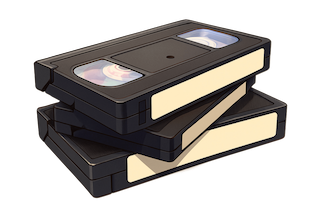
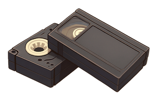
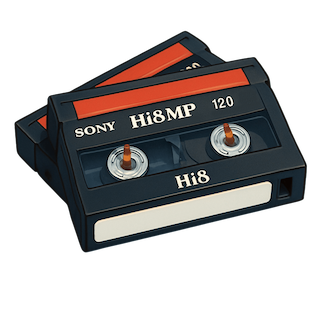

Jaké kazety digitalizujeme
Čtyři klasické formáty – jedna jednotná cena.
Účtujeme férově dle skutečné délky záznamu.
Prázdná místa, šum a TV reklamy nepočítáme.
250 Kč / hodina

VHS
Klasické rodinné videokazety z videopřehrávačů.

VHS-C
Malé kazety z rodinných videokamer.

Hi8 / Video8
8mm kazety z kamer Sony Handycam.

Mini DV
Digitální kazety z přelomu milénia.